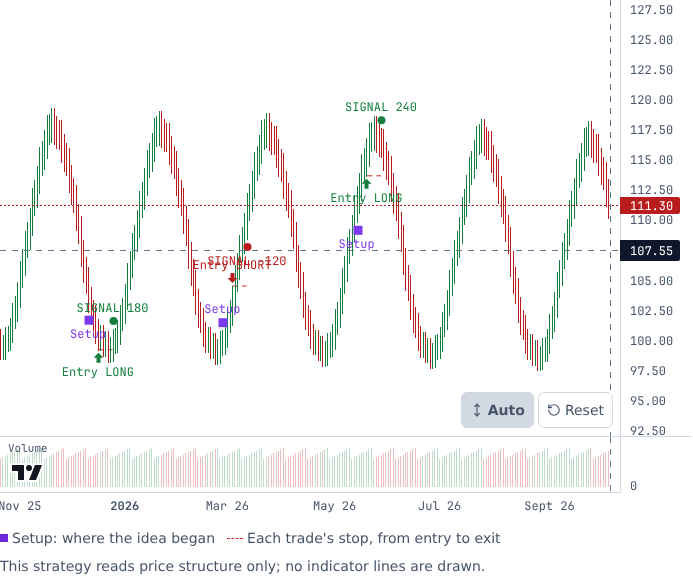
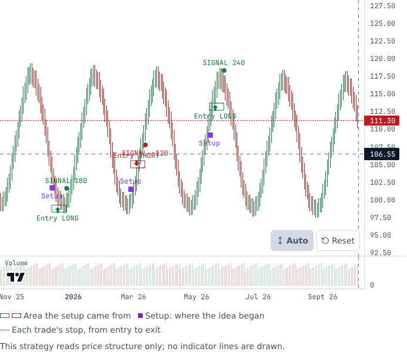
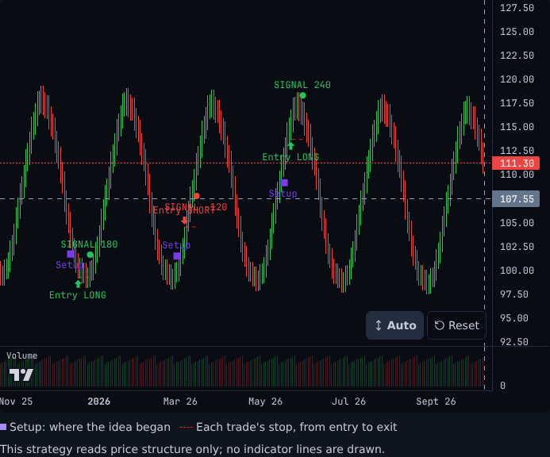
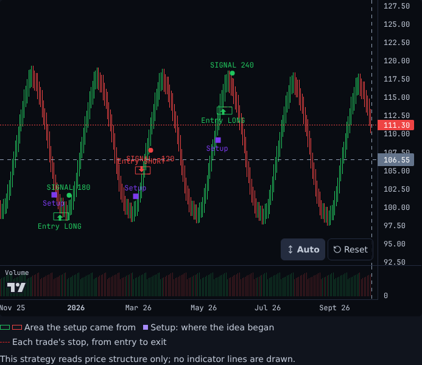
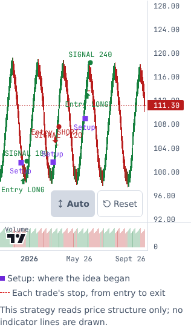
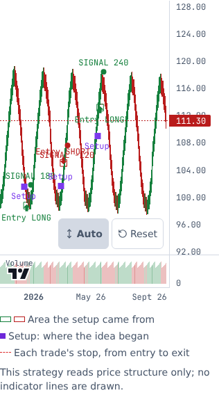
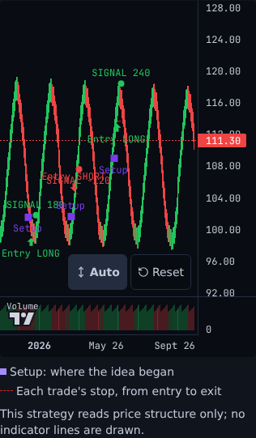
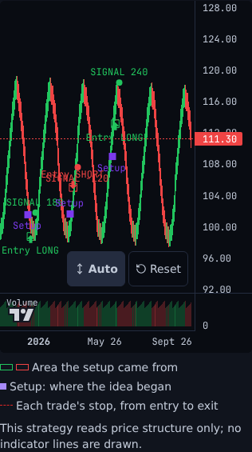

BT-DRAW 2c: the strategy's own area on the test chart
| Item | Before | After |
|---|---|---|
| Area the template's gate used | not drawn: entry, setup and stop only | boxed from the setup bar to the exit, read from the same gate run (display only) |
| Side colour | - | long: demand (up token); short: supply (down token) |
| Legend | no area line | "Area the setup came from" with one swatch per side drawn |
| Other strategies | - | no box: only templates whose setup reads the area gate (today A1) |
| No look-ahead | - | each entry's area on the full history = the area on the bars cut at that entry (cached and uncached) |
1440 px, light


1440 px, dark


390 px, light


390 px, dark

